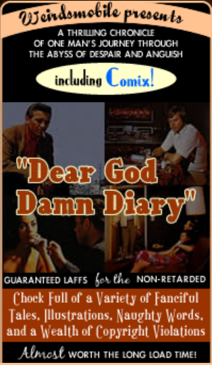
Quick B Facts
Date of Birth: 12/31/1968
Birthplace: Seoul, South Korea
Height: 5' 7"
Weight: Stop looking at my gut! I'm working on it!
Personality Type: INFJ
Dog or Cat: Dog
Mac or PC: Mac
Left or Right: Left
VHS or Beta: Beta
Funniest Movie Ever Made: Raising Arizona
2nd Funniest: The Big Lebowski
Drink: Vernor's
Religion: Existential Taoism
Trendy Disease: Asperger Syndrome
Untrendy Disease: Asthma
AIM: Asian Bastidge
• • •
B and Me
I've known Bryan for around 10 years now, and if I had to sum up his character in two words, I would say piss off, because two words would be woefully inadequate. Keep reading.
I will relate a story about the first time we met. I gave him my work address, and he rolled up in his impressive SUV. My arms were full of reading material and the like, and I asked him to wait while I put the stuff in my car. Halfway across the street, I dropped the entire armload. I was mortified. However, when I looked back, Mr. B was casually inspecting his tire, having conveniently missed the whole thing. My dignity was intact.
I like this story, because it really sums up Bryan's character. Of course he saw me drop everything, but knowing me particularly and how my pride would have been wounded by an offer of help, he kept a respectable distance and pretended not to see. His first thought is always for others in his life, especially friends and loved ones.
B Assets: He is very smart, but not a snob about it. He is constantly in the pursuit of knowledge. He writes very well, but is unnecessarily modest about his ability. He is handsome, and has an engaging grin. He has a very funny sense of humor, and has made me laugh so hard I felt like my brain was oozing out of my ear. He is well-rounded. He loves animals. He is very caring, and knows how to make the people in his life feel special and protected. He cooks quite well, and likes to barbeque. He is very good with graphic design.
B Liabilities: What a nasty temper he can have when he wants to! He tends to denigrate himself too much. He can be very forgetful. He is very demanding of others, and usually sets high expectations. He is a pack-rat. [Not any more - B] He can be a bit controlling. He does not have faith in his abilities.
An Odd Fact: any good idea Bryan has will end up as a movie, book, or consumable product within three years, but will be made by someone else. I've seen it happen: he never tells anyone else about the idea, but somehow it is produced.
Interests: kitsch and retro (often the same thing), Macintosh computers, fez hats, high-quality bedding, irony, horror stories, psychology, art history, movies, books, writing, tide pools, graphic arts, ant farms, wine and gourmet food, alternative comics, the Tao...
Turn-offs: Bryan doesn't like assholes. Assholes really piss him off and ruin his day. Other than that, he's pretty flexible.
I could go on, but I think that will do. I am glad to have met Bryan, and gladder still to be a good friend. Life is never dull when he's around, and that's probably the best compliment I can think of.
• • •
B on B
If you've made it this far, then your morbid curiosity has most likely mutated into an unhealthy obsession, and you probably should stop reading this now and contact a mental health professional immediately. If you insist on plowing ahead, though, let me see if I can find something to say that hasn't already been covered in the vital stats and the glowing testimonial above.
Nope. Actually, there isn't. Reading this page will tell you everything you need to know about me, thus draining away any potential mystery and removing any motivation you could possibly have to pick through my brain or, God forbid, meet me in person. It's been nice knowing you -- have a good life.
Are you still reading this? Jesus Christ! You must be seriously bored. I mean, at least I have a reason to be sitting here at 5 in the morning writing this -- I'm talking about myself!
One time I was going through some Yahoo personal ads for yuks, and I ran across this one guy whose ad was, to put it nicely, extremely earnest. He really wanted you to know who he was from the get-go, and made sure of it by writing what must be the longest personal ad I've ever read. I mean, it was so long that he actually created a second ad just to carry the overflow! He went on and on about his personality, views on life, views on dating...I mean, after reading the whole thing, a girl would have no reason to actually date the guy, because what more could there possibly be to know about him? In the space of this personal ad was contained the first date all the way through to marriage and divorce.
I mention this story because I'm feeling extremely self-conscious, and looking at this about page makes me think of that poor kid. There's so much information here about me, that between this and the weblog itself, nobody who reads this would have any need to have any kind of actual direct relationship with me.
Just to add another layer of self-consciousness, I really hate overly self-conscious about pages, so I kind of hate my own about page. There's a lotta self-loathing in the room tonight, folks.
Lotta self-everything!
Okay, the straight truth is, I'm only writing this because of that long-ass "100 Things" sidebar over on the left. Being the anal-retentive dork that I am, I can't stand having that gigantor sidebar hanging all the way down the page like Long Dong Silver's weiner. So I need to come up with some blather so these two columns will be more or less even, at least when stretched out to about 800 pixels or so. In a way I guess that tells you more about the kind of person I am than everything else on this about page combined.
[UPDATE: Sadly, due to my recent redesign of this site, this column now comes nowhere near to the length of the sidebar. Plans to make this About section even longer are in the works, but are being delayed by a prolonged period of good sense.]
So, now that I've levelled with you, let's move on in a spirit of cooperation, goodwill, and obsessive compulsiveness.
Now. Let's turn the lights down low and get real. Mighty real.
Because, let's face it, baby. If you're reading this far, it can be for only one reason: you are obsessed with the B. My expertise with words has gotten you all hot and bothered, and you are hungry for some of that B honey. You want that B sting inside you -- real deep.
A caveat: if you are a man, then unfortunately the B is not for you. This B only stings the ladies.
Now, where were we. Oh yes. If you are a lady, then please proceed further for more of my B lovin'. 'Cause the B will treat you right. When I freak you, I will freak you in ways in which you have heretofore never been freaked. It will be a whole new level of freakdom that you will enjoy at my expert hands.
I will caress your soft skin and whisper sweet words into your ear, such as "You are so beautiful," and "You have a slammin' booty." I will lay you down on your bed (unfortunately it will have to be your place, because my futon broke and I am currently sleeping on a really crappy mattress) and make sweet love to you until the break of dawn.
I will make all your fantasies come true, especially if they involve your close female friend and/or twin sister.
If I can borrow your Visa card, I will buy you the finest meal at the classiest restaurant in town. It will be the type of place where bread is served at no additional charge, and the napkins are made out of cloth, or an expensive clothlike paper. Money will be no object, up to the limit of your credit balance.
During our meal, I will drive you wild with such sexy actions as staring deeply into your eyes as you eat your tomato bisque, or fondling your knee under the table. You will be so crazy with sexual fever by the end of the main course, that you will want to skip dessert entirely and proceed directly to the freaking. However, I will have dessert boxed up and take it with us, because you will probably want it later, and I am the type of thoughtful man who would think of something like that.
Back at your apartment or dwelling, I will bring out my Montell Jordan and Luther Vandross CDs and play them on your stereo as you go into the bathroom to insert your contraceptive device. Thus, when you exit the bathroom, the sexy, rhythmic music will ensure that you are well lubricated and prepared for my sting.
I do not need to describe the act of our coupling, because if you know the B then you know the B will satisfy you in the ways that you desire. Your pleasure will be my paramount concern, even if you do not wish to do anal at this time. Suffice it to say that I will freak you wild.
The next morning, I will not rush out the door like the man you were with the previous weekend. Instead, you will wake up cradled in my arms, feeling my love pressed against your butt. At that point we will freak a second time.
Then I will make you breakfast.
In short, your experience with the B will be the stuff of your wildest dreams. From that moment on, no other man will suffice. In fact, if you break up with me your only alternative will be to become a lesbian, because your journey through heterosexuality will be concluded at that time.
Or, like many other women who have known the B Experience, you may even choose to break up with me immediately and never speak to me again, rather than face the possibility of never enjoying the company of another male person other than myself. However, I will help you through any qualms you might have, by calling you several times a day and while you are at work, and driving by your house every night, to show you the depth of my devotion and caring.
As you can see, the B is a powerful and alluring experience that every lady will want to have. But some of you may be asking yourselves, "Am I capable of withstanding the intensity of passion and steamy eroticism that a liaison with the B would unleash upon my very soul?" Unfortunately that is not a question the B can answer for you, although if I were to answer, that answer would be "Yes, and as soon as possible." No, that is something you will need to discover on your own, by reading my weblog, preferably several times a day, and sending me erotically charged e-mail and/or small Paypal donations.
And perhaps someday, you too will know the sting of the sweet honey B.
Rudolph the Red-Nosed Stooge
02/18/2000 01:44:22 AM
The holidays are a time for goodwill, forgiveness, and generosity of spirit. I'm all about that Christmas Cheer crap, so I'm just going to get this one thing off my chest, and then it's ho ho ho until International Commodity Exchange Day:
There are two things I want to see before I die. One is to walk into Taco Bell someday and see Steve Case asking his shift supervisor for permission to use the john. The other thing is to see my most hated Christmas carol/story fade into long-deserved oblivion.
I'm talking, of course, about "Rudolph the Red-Nosed Reindeer," the "uplifting" tale of a misfit made good. Harmless, innocent entertainment, you says? Conformist propaganda, I says. Let's take a look at the storyline: a genetic freak, Rudolph, is born with a deformity that repels his family and causes him to become a pariah amongst the "normal" reindeer, who snub and ostracize him.
Isolated and unwanted, Rudolph languishes in the untouchable caste of the North Pole community until the head honcho, Santa Claus — who heretofore has taken zero interest in the plight of our hero — realizes that Rudolph's deformity is useful to him, upon which he finally deigns to acknowledge Rudy's existence, if only to press him into service.
Does Rudolph tell Santa to stick it where the sun don't shine? Nope — he cheerfully submits to this crass exploitation, saving Christmas with the very same anomalous appendage that had previously earned him only curled lips and dismissive snorts amongst his benighted brethren. Then, and only then, do the phony bastards condescend to accept Rudy, who, in true Uncle Tom fashion, soaks it up like a sponge, unquestioningly and without a smidgen of rancor.
To which I say, hum-freaking-bug. This song is nothing more than an anthem for conformity and abject submission to the shallow sensibilities of the ignorant masses.What exactly does this song teach children? That it's perfectly okay to revile and humiliate those who are different, unless their freakishness con somehow be put to use for personal gain. And if you're one of the misfits, your goal in life ought to be to appease and serve the very assholes who treated you like shit until they wanted something out of you.
It's all very good that Santa finally comes calling with his hat in his hand, but where the hell was he when Rudolph was being ejected from the reindeer games? What Rudolph should have done was to send Santa running back to his workshop with a candy cane up his rectum. Or at the very least, he should have done the one favor for Santa — for the children's sake — and then told the whole North Pole crew to go screw themselves and buy a goddamn halogen lamp next year. Then he should have flown off to find Hermie and the other Misfit Toys and form a badass Misfit Army to come back and settle Santa's hash for his centuries of mismanagement and incompetence.
But that wouldn't be very holly jolly, would it? And it wouldn't very well serve the ideological purpose of this song, which is to reinforce the status quo by patting the small-minded, unenlightened twits of the world on the back for their oh-so-munificent tolerance, while undercutting the resentment and anger of the budding non-conformist by inculcating them with the spurious notion that your worth as a human being lies solely in your usefulness to society.
Happiness, this song teaches us, lies in servitude to societal values, no matter how corrupt they may be. No doubt the sequel to "Rudolph" would see the red-nosed reindeer leading a cadre of jackbooted thugs on an ethnic cleansing of the North Pole, rounding up the "inferior" members of their society and pressing the useful ones into slavery while shipping the undesirables off to the concentration camp (a.k.a. the Island of Misfit Toys).
Then all the reindeer loved him
As they shouted out with glee,
"Rudolph, the red-nosed reindeer,
Pawn of crass conformity!"
We now return you to your regularly scheduled holiday cheer.
El Tigre Furioso
07/18/2000 01:55:21 AM
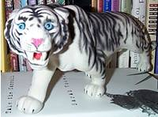
Paris, 1947. Germaine and I were lunching at the Café Miasme,
a charming bistro perched alongside the Canal des Malades Chiens,
of the sort that used to blossom like wildflowers in Paris before the
war. We were waiting there for the arrival of Germaine's brother, Tito,
who had that very day been appointed to DeGaulle's cabinet. Germaine,
who I daresay was more anxious for his brother than the man himself,
was deeply into his third demitasse of espresso and was positively
shaking like a leaf.
"Germaine, old friend," I said, placing a paw on his quivering
shoulder. "Calm your nerves. It is a great day for Tito...a great
day for France, n'est-ce pas?"
Germaine only shook his head, his eyes never leaving the swirling blackness
of his espresso.
"Besides," I continued, casting my gaze out onto the busy
Rue de Chat Confus, where crowds of morning shoppers were already
congregating outside the booths of the produce vendors and volemongers,
"I hear tell that General DeGaulle himself has invited both you
and your brothers to the state dinner at Versailles." I glanced
at Germaine, hoping my words would bring the touch of a smile to those
anxious lips. But he remained unmoved.
Frustrated, I leapt from my chair and, oblivious to the startled gasps
of the other patrons, I stood over a shocked Germaine and clutched his
shoulders. "Germaine!" I roared. "It is me who stands
before you now — El Tigre Furioso — your friend of old! Did
we not stand together against the Führer in the Resistance? Was
it not I who saved your life at Nantes, at the boulangerie at Nîmes,
who sang war songs with you at Avignon? I ask you, dear friend —
to whom can you unburden yourself, if not to me?"
Germaine stared up at me with wide, unblinking eyes. "Aiiieee!"
he screamed. "C'est un tigre! Aidez-moi! Aidez-moi!"
At that moment, the realization struck me — I did not comprehend
a single word of French! Quickly I devoured Germaine and paused only
to finish my espresso before making haste down the Rue de Chat Confus
to my room at the pension. I was heartbroken, and to add insult to injury,
Tito gave me a frosty reception that evening at the state dinner. But
I learned a valuable lesson that day, my friends. A valuable lesson
indeed, in the vagaries
of the human heart.
Paxil Comix
08/31/2000 12:55:14 AM
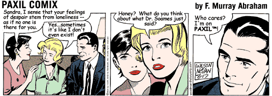
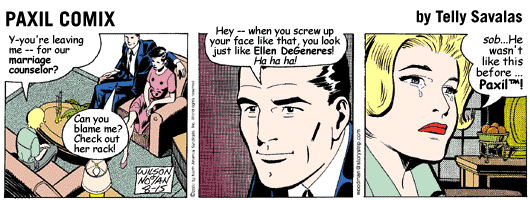
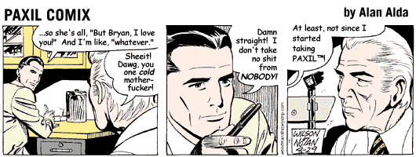
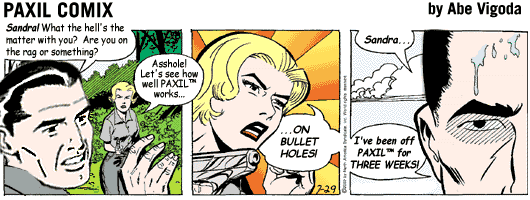
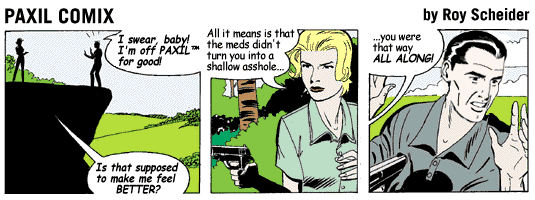
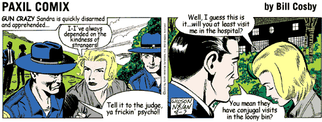
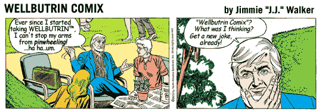
Humor
11/05/2000 01:05:41 AM
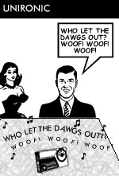
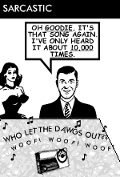
Henry's First Day at School
12/02/2000 01:22:04 AM
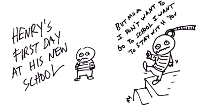
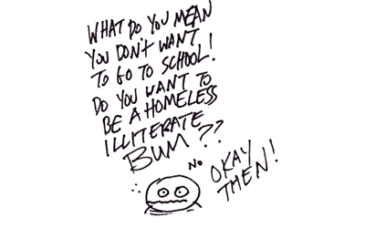
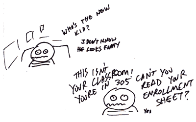
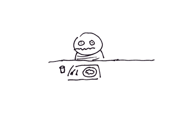
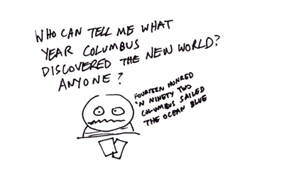
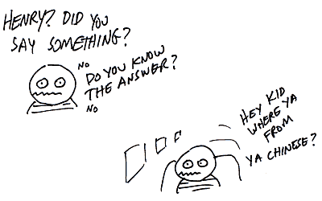
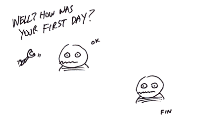
Deconstruction of the Nerds
12/14/2000 01:37:45 AM
"Nobody's going to be free until nerd persecution ends."
— Revenge of the Nerds
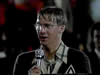
I'm
watching Revenge
of the Nerds on Comedy Central. Yeah, it's that kind of day.
Anyway, two random thoughts on this:
1) This print is amazingly clear. I thought I was watching Revenge
of the Nerds IV: Nerds in Love. Did they digitally remaster
this film? If so...why?
2) Thematically, this film just gets more interesting with time. I
mean, ostensibly, it's about nerds who empower themselves with a "taking
back the words they use to hurt us" approach, redefining the
"nerd" epithet as a badge of honor and exercising "nerd
power" by creating a kind of "geek chic," making nerdiness
look cool by emphasizing its advantages — technical wizardry,
creativity, and of course, the immortal line "Jocks only think
about sports, nerds only think about sex."
But then, this film dates back to 1984, and it's very much "of
its time." So most of the things that were supposed to be examples
of nerd-cool, such as effeminate Lamar's breakdancing at the fraternity
talent show, or the whole Devo-esque synthpop performance, are now
hopelessly
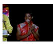
dated and...nerdy. The impact of the film's "nerds can be cool"
message is diluted by the fact that these guys can no longer be seen
as cool by most standards. In fact, they seem even dorkier now than
they did before their "coming out," so to speak. When Lamar
does the "robot" while bloodlessly rapping, "Now clap
your hands everybody / And everybody clap your hands," you no
longer cheer; you cringe. And the audience's warm response to this
seems either nonsensical, or motivated by some sort of ironic appreciation
of retro camp humor.
Which brings me to my final point, that, from the perspective of the
camp aesthetic, Revenge of the Nerds actually takes on a certain
hip cachet simply by virtue of its out-of-fashion sensitibilities
passing, between 1984 and 2000, from cool to uncool and finally back
to cool, as kitsch, 80's style. Unlike a film such as, say, Ferris
Bueller's Day Off, which taps into a more universal and mainstream
aesthetic and therefore passes smoothly, for the most part, from unironic
80's cool to ironic, iconic 80's cool, Revenge of the Nerds
becomes a far more complex and multilayered work with each passing
year. Is anyone still reading this far? God, I hope not. I sure as
hell wouldn't be. Heck, I could probably write anything at this point
and no one would even notice. Hee hee. Ilsa yanked Frieda to her feet
and slapped her hard across the face. "Talk, or you'll suffer
the fate of your companions!" she screamed. Frieda, still dazed
from Dr. Winterbottom's elixir, blinked uncomprehendingly. Ilsa sighed,
grabbed Frieda roughly by the chin, and turned her face toward the
far wall of the cell. In the corner, Pauline and Raffaela lay on the
floor in chains, unconscious, covered from head to foot in lemon meringue.
Frieda gasped. The dwarf in the tattered clown costume glanced up,
startled, nearly dropping his Magic Marker. Then his watery eyes glinted
as he
Fisher-Price Porn
01/19/2001 01:49:37 AM
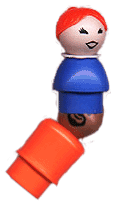
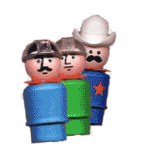